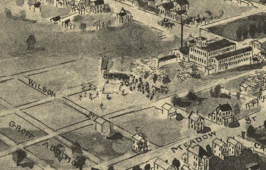

| Berlin, Pennsylvania - 1905 |
|---|
 |
| Berlin, Somerset County, Pennsylvania 1905.
Drawn and published by T. M. Fowler. Fowler, T. M. (Thaddeus Mortimer), 1842-1922. CREATED/PUBLISHED Morrisville, Pa. [1905] NOTES Perspective map not drawn to scale. Bird's-eye-view. Includes illus. and index to points of interest. REFERENCE LC Panoramic maps (2nd ed.), 737 |